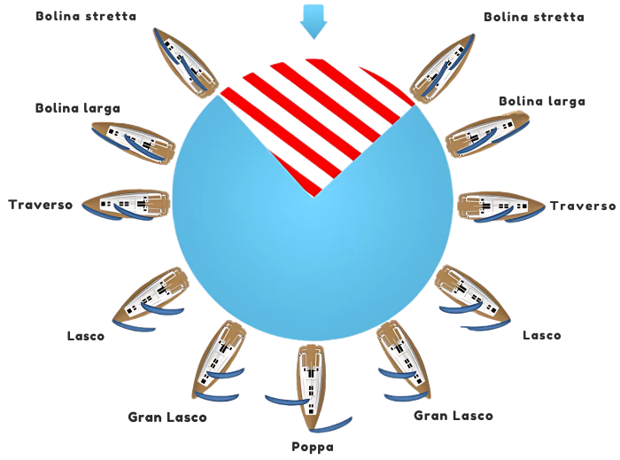

Le Andature: Navigare con il Vento
Una barca a vela non si muove semplicemente nella direzione in cui punta la prua, ma naviga grazie alla forza del vento sulle vele. L'angolo tra la direzione del vento e l'asse della barca determina l'andatura. Imparare a riconoscerle e a regolare le vele di conseguenza è il cuore della navigazione.
Le Principali Andature
- Bolina: È l'andatura che permette di "risalire" il vento, navigando il più vicino possibile alla sua direzione. L'angolo è di circa 45°. Le vele sono molto "cazzate" (tirate verso il centro della barca).
- Traverso: Il vento arriva di lato, a 90° rispetto alla barca. È spesso l'andatura più veloce e stabile. Le vele sono a metà della loro regolazione.
- Lasco: Il vento arriva dalle spalle (circa 135°). È un'andatura comoda e veloce, con le vele molto "lascate" (lasciate andare verso l'esterno).
- Poppa: Il vento arriva esattamente da dietro (180°). Le vele sono completamente lascate. È un'andatura che richiede attenzione per il rischio di "strambata" involontaria (il passaggio violento del boma da un lato all'altro).
L'Angolo Morto
Nessuna barca a vela può navigare direttamente controvento. Nel disegno delle andature, l’area a strisce rosse indica una zona di circa 90° totali (45° per lato), chiamata “angolo morto”, in cui le vele non riescono a generare portanza e la barca si ferma. Per risalire il vento, si naviga a zig-zag (bordeggiando) con andature di bolina.